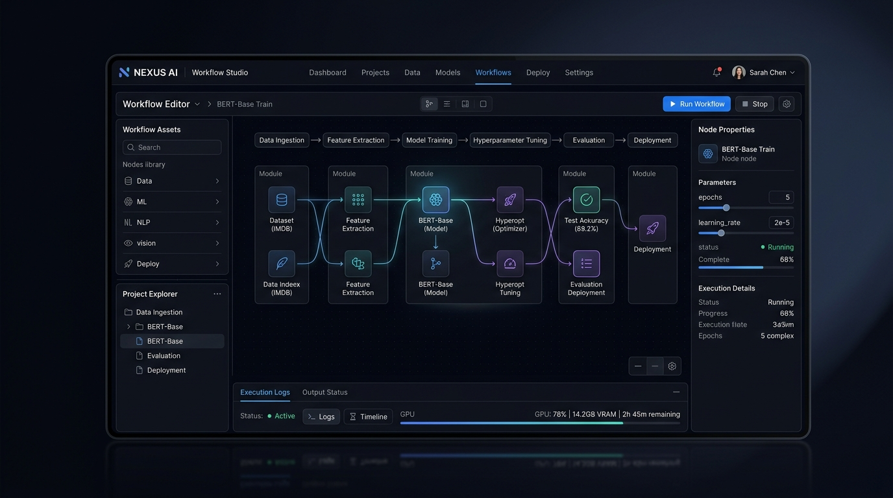
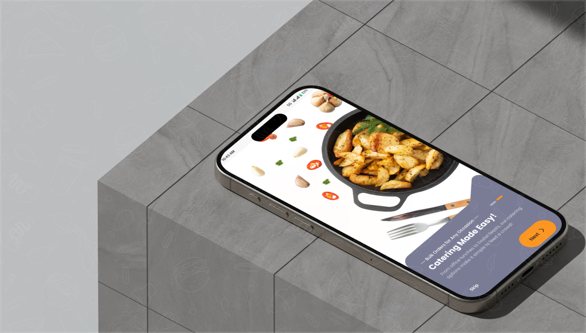
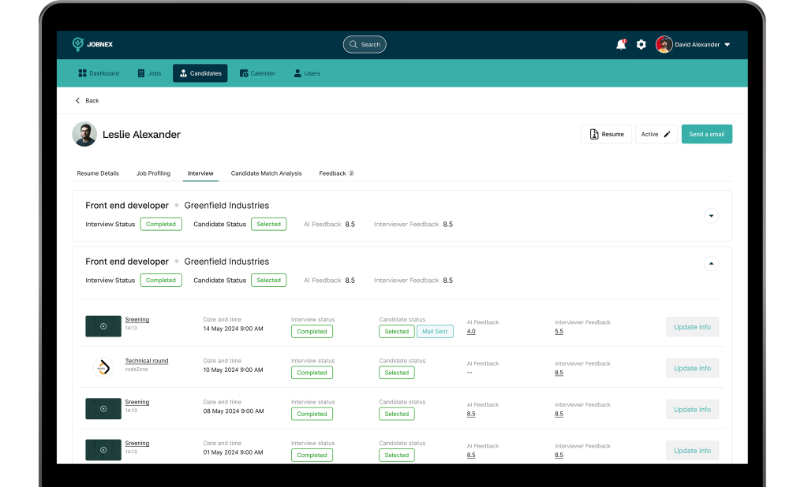
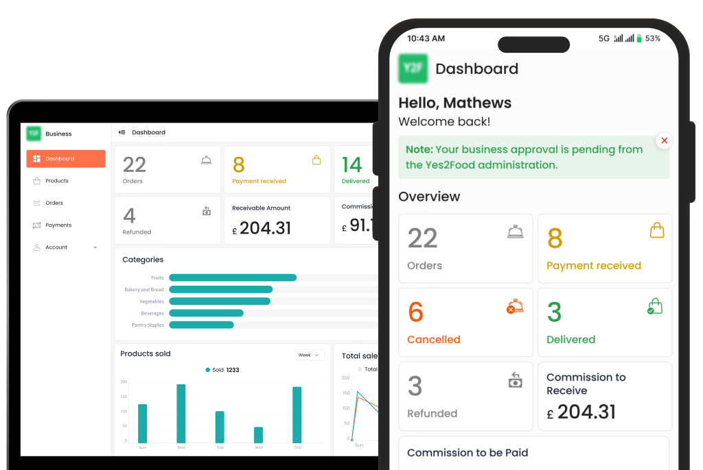

FLYER EATS
Making everyday meals more flexible.
A meal-planning and food-delivery experience designed around flexibility, variety, and easier everyday ordering.

Food shouldn't be this complicated.
Fixed meal plans, repetitive menus, expensive daily orders, and limited customization made everyday meals frustrating.
Make ordering and planning meals flexible, affordable, and easy to manage.
A lot of food talk.
We spoke with users to understand how they plan, order, and manage their everyday meals.
What if meals could work around you?
FLEXIBILITY
Choose when and what to eat.
PERSONALIZATION
Make meals fit individual preferences.
PLANNING
Schedule meals before the hunger hits.
Meet the Food Planner.
A flexible meal-planning experience that lets users plan, customize, schedule, and manage their meals with less effort.

From complex ordering to simple planning.


The first version wasn't quite there.
User testing revealed friction in the Food Planner, especially around meal selection and customization.
Complex Selection
Overwhelmed options with nested meal customization levels causing drop-offs.
Clearer Selection & Guided Customization
Simplified 3-step meal planner flow with smart defaults and instant basket updates.
V2 won.
The refined Food Planner helped users complete tasks with greater clarity and confidence.
BETTER CLARITY
FASTER SELECTION
LESS HESITATION
Good design isn't about adding more.
It's about removing the confusion.
For Flyer Eats, the biggest improvement came from understanding the problem, simplifying the flow, and validating the solution with real users.